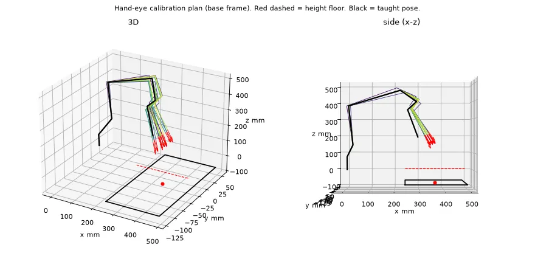
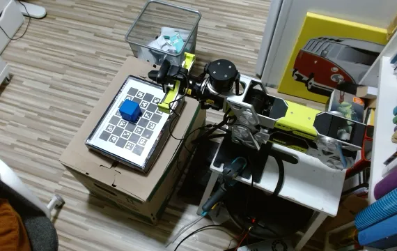

Tag 4 · Sonntag, 22. November 2026
Überhitzung, eine neue Kamera und die erste gute Hand-Auge-Kalibrierung
Zwei Abstürze erklärt, ein Kamera-Tausch, vier gescheiterte Kalibrierläufe – und dann 13 von 20 Posen um 02:48. Als Nächstes kommt der erste Greifversuch.

Eine Nachtsession direkt nach Tag 3: Der Arm stürzte immer wieder ab, also haben wir zuerst die Ursachen gesucht – und am Ende die Kalibrierung bekommen, der wir seit zwei Tagen hinterherlaufen. Alle Armbewegungen waren Davids eigene Läufe.
🛠Was wir gemacht haben
- v3.9.6 – der Lauf um 00:23 stürzte bei Pose 7 ab. Diesmal kein Kabel: Der gemeinsame USB-2.0-Hub hing etwa eine Sekunde, beide Kameras und alle 7 Motor-Feeds froren gleichzeitig ein (8 GB RAM im Swap, GUI bei rund 200 % CPU). Unsere eigene Regel „Feedback 1 s eingefroren → Drehmoment aus“ schaltete dann die Motoren ab. Jetzt halten wir das Drehmoment und senden das letzte Ziel bis zu 3 s lang erneut, während wir weiter abfragen.
- v3.9.7 – der Lauf um 00:33 sackte durch. Der Treiber des Schulter-Lift-Motors erhitzte sich von 32 auf 78 °C beim Halten von etwa 13 Nm und meldete Fehler 0x12 (Überstrom + HALL); das Gelenk wurde schlaff. Jetzt schaltet jeder Motorfehler alle Motoren ab. Eine Temperaturüberwachung warnt bei 60 °C, pausiert ab 64 °C in der Startpose, bis es unter 52 °C ist, und stoppt weich bei 70 °C. Bei Kameraverlust wartet der Arm in der Startpose und versucht es erneut. Das Sync-Skript entfernt außerdem private IPs, Pfade und Inventarnummern vor dem Push. Code: Commit 95f2dc4; weitere Änderungen kommen mit einer englischen Oberfläche in v3.9.8.
- Der Kamera-Tausch im Detail. Die Logitech C270 läuft mit etwa 30 fps bei 640×480; bei 1280×720 unkomprimiert schafft sie am gemeinsamen Hub nur 0–1,5 fps. Fester Fokus, scharf ab etwa 30 cm. Die Greiferbacke verdeckte den unteren Bildteil, bis David die Kamera nach oben kippte.

💭Denkweise
Unser Kalibrier-Planer ging von der alten Innomaker-Geometrie aus (Kamera schaut entlang der Finger) und zielte mit den Fingern aufs Brett – die anders montierte C270 sah deshalb nur den Brettrand. Unsere Lehre: nicht von einem idealisierten Kamera-Aufbau planen, sondern von einer Pose ausgehen, die das Ziel schon sieht, und darum herum variieren.
🏆Wins
- 02:48 – 13 von 20 Posen gut, übernommen. Intrinsics der Handgelenkkamera 0,463 px RMS, Reprojektion über die ganze Kette 1,56 px, Hand-Auge AX=XB Median 0,64° / 3,7 mm, Streuung der Brettpose 1,7 mm RMS, Offset Kamera–Greifer [2,9; −8,3; 26,3] mm. Die Übersichtskamera liegt bei 0,43 px.
- Der „Jitter“-Planer funktioniert: 20 kleine Gelenk-Offsets um eine angelernte Pose, die das Brett sieht, nach den ersten Fehlschlägen halbiert. David hat die Pose um 02:47 neu angelernt.

💥Fails
- Zwei Abstürze (siehe oben) – der erste durch einen USB-Hänger plus unsere übereifrige Sicherheitsregel, der zweite durch ein überhitztes Gelenk.
- Vier Kalibrierläufe (02:21–02:43) fanden zu wenige Brettecken. Ursachen: falsche Aufbau-Geometrie im Planer, die Greiferbacke verdeckte Bildteile, und kleine Bilder. Um 02:41 war nur 1 von 20 Posen gut.
- Ein stiller Bug: Kalibrierbilder wurden auf 480×360 (die Größe der geteilten Frames) statt 640×480 verkleinert. Behoben.
- Die GUI brauchte außerdem
ulimit -n 4096(„too many open files“). - Eine Warnung bleibt: Die Tisch-Kalibrierung der Übersichtskamera stammt von vor den Kamera-Änderungen heute Nacht und muss aufgefrischt werden.
•Erster Greifversuch (in Arbeit)
Um 02:51 haben wir mit dem Greifen begonnen. Der Trockenlauf-Detektor fand 0 Objekte, obwohl der blaue 51-mm-Würfel gut sichtbar ist – vermutlich zu klein im Übersichtsbild oder der Schwellwert ist zu streng. Also hat David direkt am Würfel eine Greifpose angelernt (Fingerspitze etwa 4 mm über dem Brett) und als Ziel blue_box gespeichert. In Arbeit, nur Simulation: ./grasp.sh "grasp blue cube" – erkennen, per Kalibrierung lokalisieren, planen, getipptes „yes“, ausführen, dann Erfolgsprüfung über die Greiferbreite, davor ein Fallback über blaue Flecken. Am Morgen sollte es fertig sein.

📌Learnings
- Kalibrier-Planer müssen den echten Kamera-Aufbau abbilden – oder besser um eine angelernte Pose planen, die das Ziel schon sieht.
- Die ganze Bild-Pipeline Ende zu Ende prüfen. Ein versteckter Downscale hat uns Stunden gekostet.
- Motortemperaturen bei langem Halten beobachten. 13 Nm über Minuten kochen einen Treiber.
- Programmiertes Erkennen und Greifen ist jetzt möglich. Das ACT-Training braucht neue Demos mit der C270, weil die alten Demos die alte Kamera nutzen.
</>Code-Stand
Aktuell auf main: v3.9.7 (95f2dc4). Die Hand-Auge-Kalibrierung ist für die neue Handgelenkkamera übernommen; das Greif-Skript ist bisher nur Simulation.